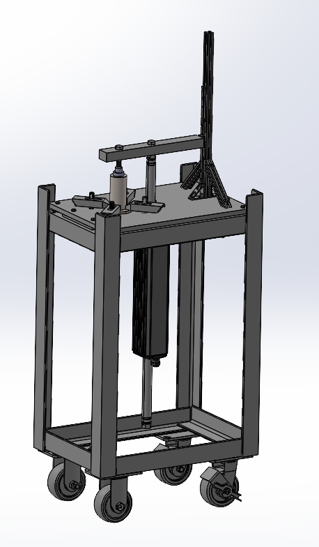
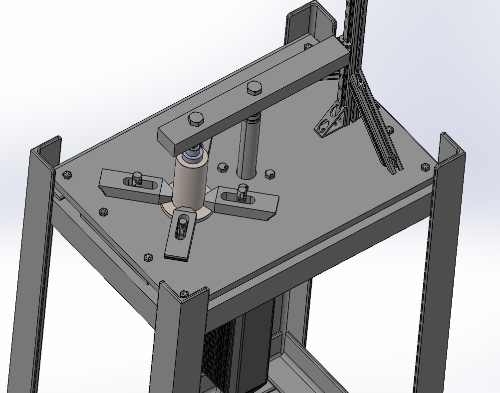
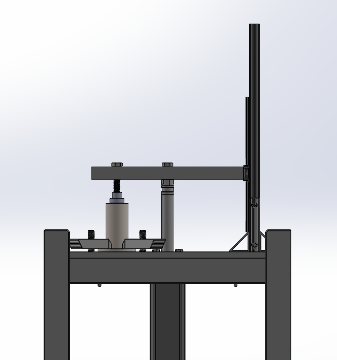
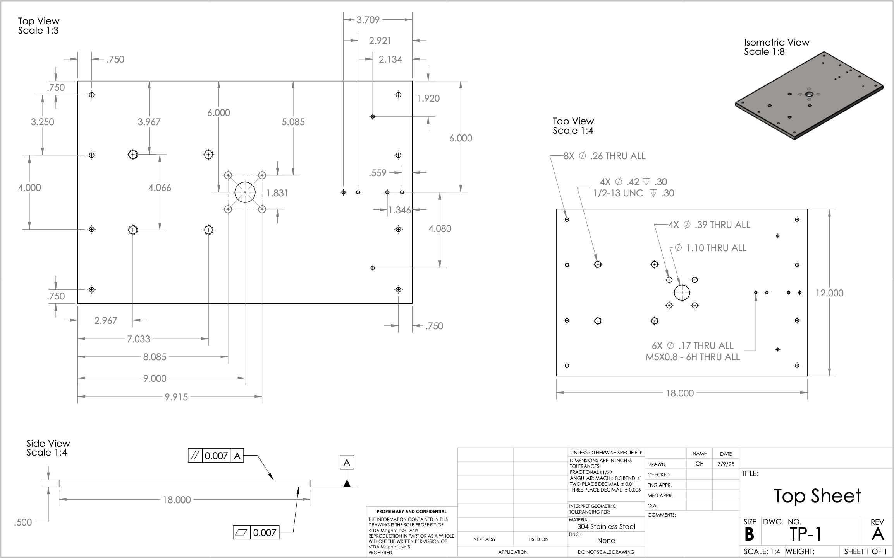
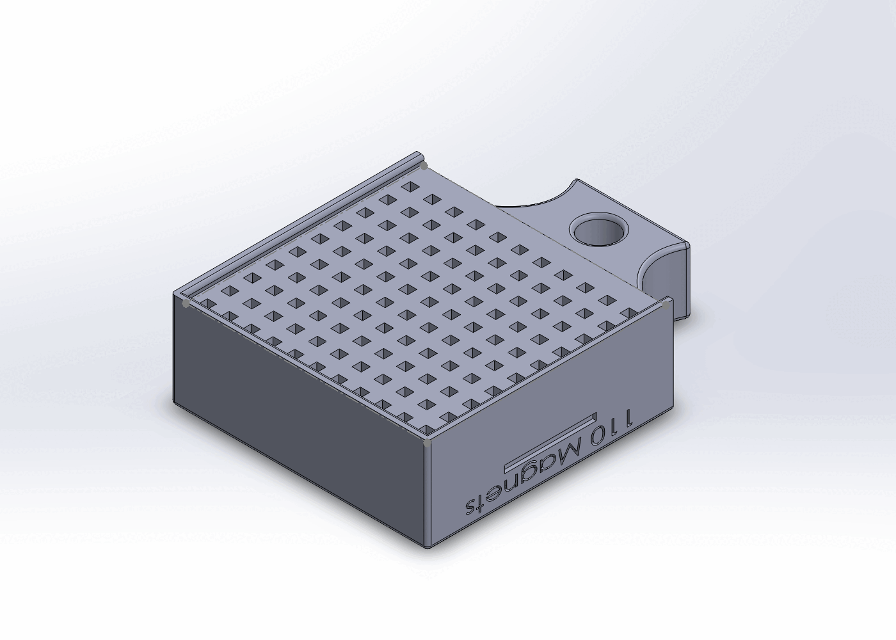
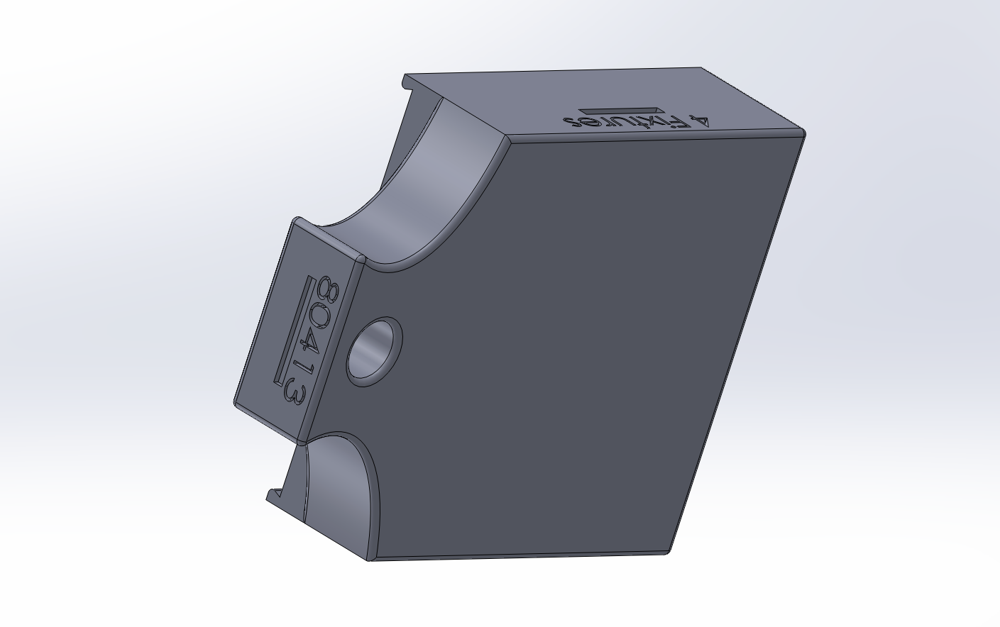
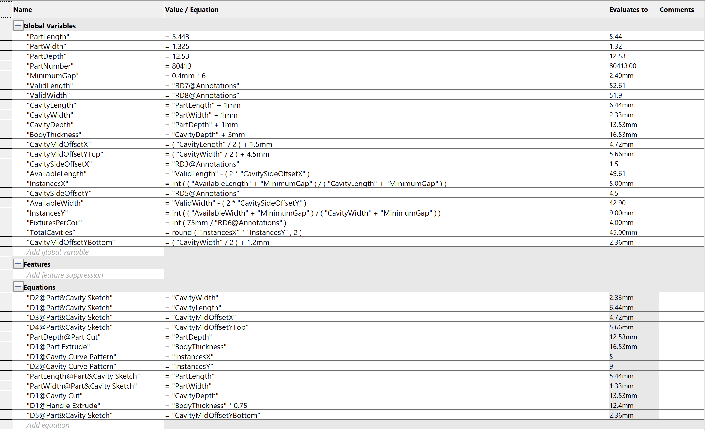
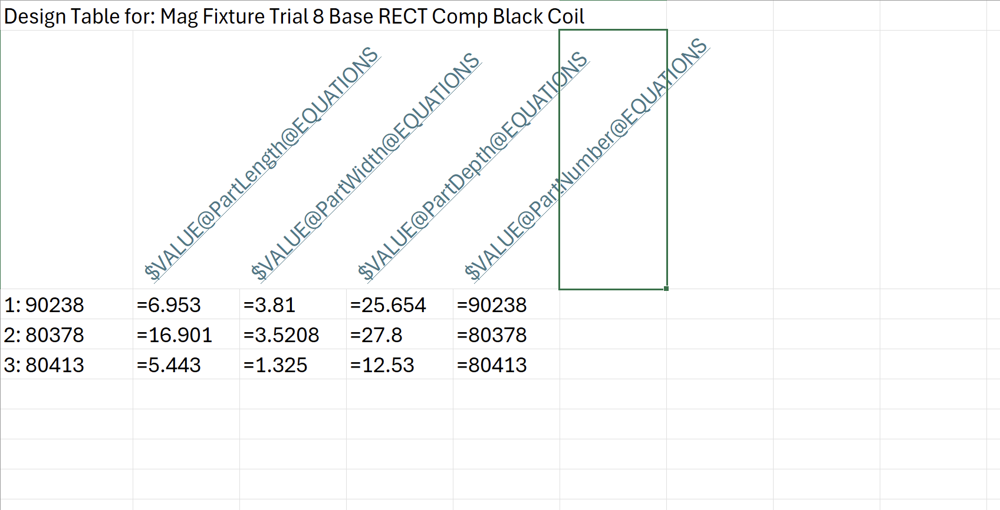

Problem: TDA Magnetics was experiencing recurring insertion failures during the thermal sleeving process, leading to damaged parts and ~$10K per batch in rework. Operators relied on inconsistent manual setups, which caused misalignment and downtime.
Solution: Designed a fully repeatable thermal sleeving fixture in SolidWorks with GD&T-controlled components, an adjustable clamping system, and a mobile frame for ergonomic use. The fixture eliminated alignment variability, reduced batch rework costs, and improved operator throughput. Full engineering drawing package was produced and sent to a machine shop for fabrication.
Large image shows the full assembly. Top-view and side-view images show alignment and clamping features. Bottom image shows the manufacturing drawing issued to the vendor.




Problem: At TDA, creating new magnetizing fixtures required 10 minutes of manual CAD modeling per part, slowing down production and requiring SolidWorks experience that operators didn’t have.
Solution: Developed an automated SolidWorks model driven by equations, design tables, and an Excel interface. Operators can now generate custom fixtures in ~10 seconds without modifying CAD manually. The system standardizes fixture geometry, supports rapid coil setup, and removes the need for engineering involvement in routine fixture creation.
The large GIF shows four automatically generated fixtures. Additional images show the rear view, parametric equations, and the Excel-based input sheet.




Problem: Making repetitive G-code edits for 3D printing, such as temperature changes, purge routines, or bed leveling commands, required re-slicing parts every time—adding unnecessary time and introducing room for error.
Solution: Built a Python command-line tool to batch-edit G-code files automatically, allowing users to insert, remove, or replace commands without opening a slicer. The tool streamlines iteration during prototyping and is especially useful for large-file or multi-machine workflows.
Source available on GitHub.
More engineering work is listed on my LinkedIn — full project write-ups are being added here over time.